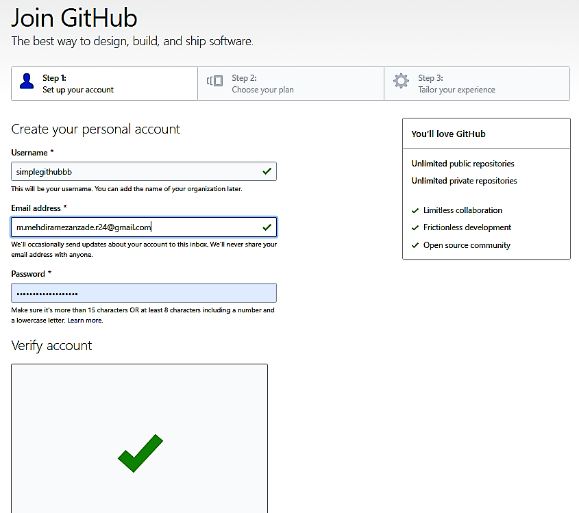
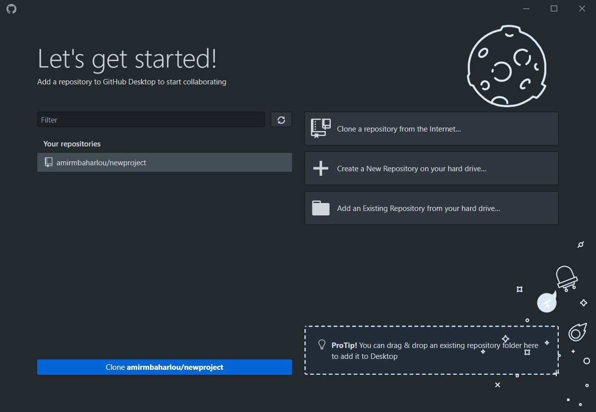

به قلم: @amirmbaharlou, @amirtghh
سوالی اگر دارید خوشحال میشویم پاسخ دهیم!
آموزش
برای ورود به سایت گیتهاب اینجا روی لینک زیر کلیک کنید.
در قسمت نام کاربری؛نام دلخواه خود را انتخاب کنید
در قسمت ایمیل ادرس ؛ایمیل خود را وارد کنید.
در قسمت پسورد ؛رمز دلخواه خود را انتخاب کنید.
در پایین صفحه روی کلید سبز رنگ کلیک کنید.

برای ورود روی قسمت رایگان کلیک کنید.
در پایین صفحه روی کلید سبز رنگ کلیک کنید.

صفحه پروفایل.

از ادرس تنظیمات ایمیل خود اطمینان حاصل فرمایید

صفحه تنظیمات پروفایل وشخصی.

pressz پیغام دعوت شدن به .
پیغام عضو شدن .

برای دانلود گیتهاب دسکتاپ اینجا کلیک کنید.
ابتدا در برنامه ساین این میکنید.

آدرس پروژه مورد نظر را کپی کنید.
سپس با زدن کلون ریپازیتوری و در سر برگ یو آر ال لینک رادر قسمت یو آر ال پیست کنید و کلون را بزنید.
منتظر باشید تا پروژه کلون شود.